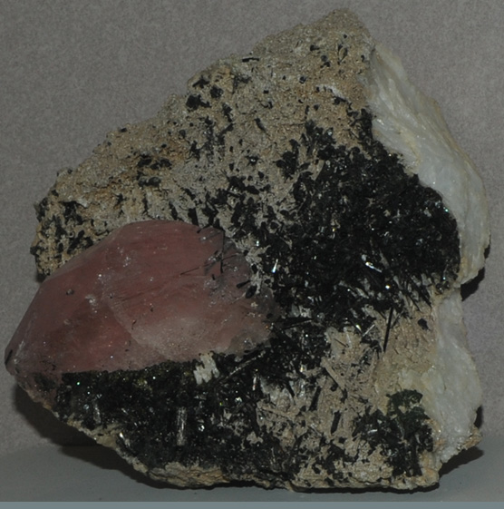
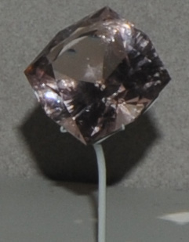
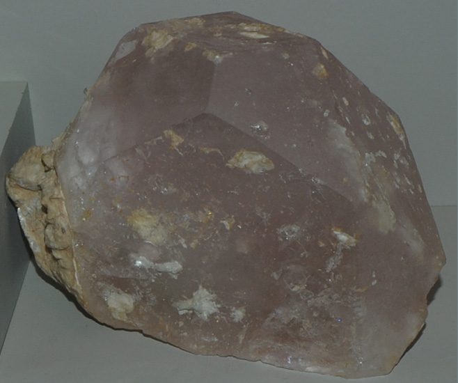
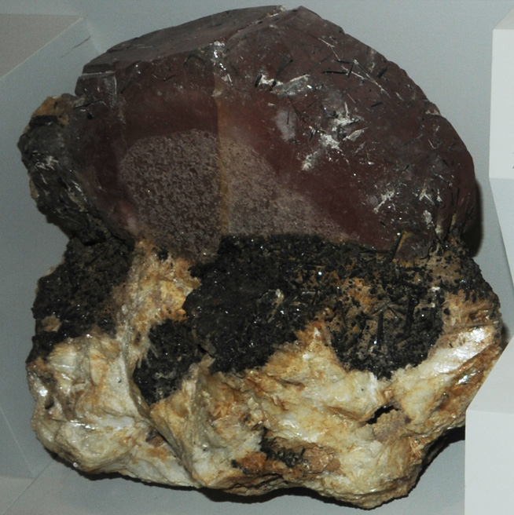

Morganite
|  | Be3Al2(SiO3)6
Morganite is a variety of the mineral beryl which has the chemical composition Be3Al2(SiO3)6 . The pink to salmon colored morganite is one of the gem varieties of beryl. The sample at left is described as morganite with elbaite and albite. It is from Corrego do Urucum pegmatite, Minas Gerais, Brazil and is about 13 cm across. This morganite gem is 82.8 carats and is also from Minas Gerais. |
These samples are displayed in the Smithsonian Museum of Natural History.
| This sample is described as morganite with albite. It is about 18 cm across and is from Vandenberg mine, Palo, California.
|

|
|  |
This sample is described as morganite with albite. It is about 11 cm across and is from Gilgit, Northern Areas, Pakistan. |
| This sample is described as morganite with elbaite and albite. It is about 30 cm across and is from Corrego do Urucum, Minas Gerais, Brazil.
|

|
Mindat: Morganite
|
Index |